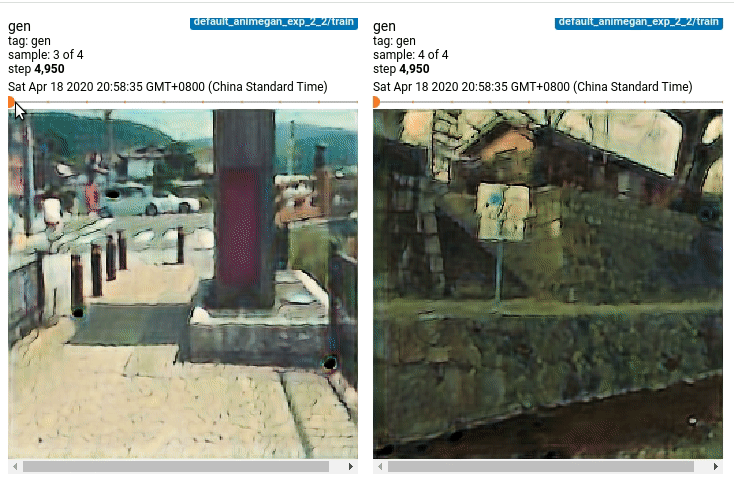
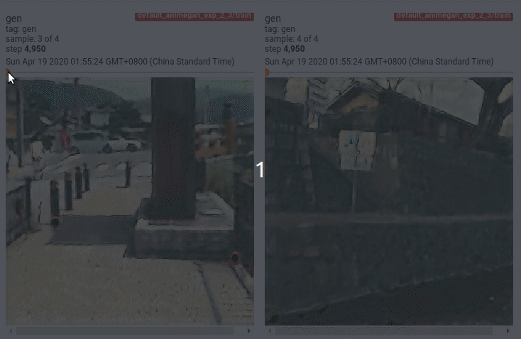

Anime GAN
最近偶然看到一篇AnimeGAN的推送，他的官方实现在这里。我很感兴趣，尝试学习并复现，下面是我的一些记录。
NOTE：虽然很有趣，但是没算力真的让我想放弃。
数据预处理
首先使用作者提供的数据集，他的数据集主要由以下部分组成，Hayao是哈尔的移动城堡里面所截取的图像，style是原始图像，smooth是对原始图像模糊化后的结果。train_photo是一些真实世界的图像。
Hayao
- smooth
- style
train_photo数据增强
原作者默认他没有使用数据增强。我一开始用了随机放大再裁剪，后面发现生成的图像太真实，就没用了，不过应该是没有关系的。
模型定义
生成器
作者这里应该也是用他参考的项目里面模型。反正就是加残差的编码解码模型。这里用了谱归一化，我提供了一个实现在这里。
判别器
判别器也挺普通，但是因为我生成图像太真实，发现最后判别器的判别效果太好，我在想要不要加点Dropout，不过算力不够暂时还没有实验过。
损失计算
这里是重点。首先阐述他的总体思路：
- 利用一个辅助模型，将原始真实图像和生成图像的输入至辅助模型，增加约束使得他们的特征图尽量相同。也就是使得生成图像更加接近原始图像。
- 生成器损失：使得判别器认为生成图像越接近动画越好。
- 判别器损失：输入动画图像、生成图像、灰度动画图像、模糊动画图像，使得动画图像是动画的置信度越高越好，其他置信度越低越好，这些我觉得都是为了让生成图像不模糊。
初始化损失
由于GAN比较不稳定，首先先训练一个epoch的一致性损失：
NOTE： 这里我用了MobileNetV2，原作者使用VGG19，实际训练并无多大差别，还有就是weights的使用，实际上在我做互信息的时候，仅初始化过得模型对于输入输出的映射是更加单一的，所以尝试了不用预训练模型，实际训练也没有多大差别。
def local_variables_init(self):
""" 定义一个辅助模型，是的模型生成图像更加符合原本图像"""
inputs = tf.keras.Input([256, 256, 3])
model = tf.keras.applications.MobileNetV2(
include_top=False,
alpha=1.3,
weights=None, #'imagenet',
input_tensor=inputs,
pooling=None,
classes=1000)
self.p_model: tf.keras.Model = tf.keras.Model(
inputs,
model.get_layer('block_6_expand').output)
# model: tf.keras.Model = tf.keras.applications.VGG19(
# include_top=False,
# weights='imagenet',
# input_tensor=inputs,
# pooling=None,
# classes=1000)
# self.p_model = tf.keras.Model(
# inputs,
# tf.keras.layers.Activation('linear', dtype=tf.float32)(
# model.get_layer('block4_conv4').output))
self.p_model.trainable = False一致性损失代码如下。
@staticmethod
def con_loss(pre_train_model, real_data, fake_data):
real_fmap = pre_train_model(real_data, training=False)
fake_fmap = pre_train_model(fake_data, training=False)
con_loss = AnimeGanInitLoop.l1_loss(real_fmap, fake_fmap)
return con_loss生成器损失
生成器损失由以下几部分组成：
- 一致性损失，风格损失
生成图像与现实图像的一致性损失，生成图像与动漫图像的风格损失。
@staticmethod
def style_loss(style, fake):
return AnimeGanLoop.l1_loss(AnimeGanLoop.gram(style), AnimeGanLoop.gram(fake))
@staticmethod
def con_sty_loss(pre_train_model, real, anime, fake):
real_feature_map = pre_train_model(real, training=False)
fake_feature_map = pre_train_model(fake, training=False)
anime_feature_map = pre_train_model(anime, training=False)
c_loss = AnimeGanLoop.l1_loss(real_feature_map, fake_feature_map)
s_loss = AnimeGanLoop.style_loss(anime_feature_map, fake_feature_map)
return c_loss, s_loss- 色彩损失
生成图像与动漫图像的色彩损失。
@staticmethod
def color_loss(con, fake):
con = AnimeGanLoop.rgb2yuv(con)
fake = AnimeGanLoop.rgb2yuv(fake)
return AnimeGanLoop.l1_loss(con[..., 0], fake[..., 0]) + huber_loss(
con[..., 1], fake[..., 1]) + huber_loss(con[..., 2], fake[..., 2])- 生成损失
我尝试之后发现还是lsgan最稳定，这里用的就是lsgan。
@staticmethod
def generator_loss(loss_type, fake_logit):
if loss_type == 'wgan-gp' or loss_type == 'wgan-lp':
fake_loss = -tf.reduce_mean(fake_logit)
if loss_type == 'lsgan':
fake_loss = tf.reduce_mean(tf.square(fake_logit - 1.0))
if loss_type == 'gan' or loss_type == 'dragan':
fake_loss = tf.reduce_mean(
tf.nn.sigmoid_cross_entropy_with_logits(
labels=tf.ones_like(fake_logit), logits=fake_logit))
if loss_type == 'hinge':
fake_loss = -tf.reduce_mean(fake_logit)
return fake_loss判别器损失
分别对动画图像、生成图像、灰度动画图像、模糊动画图像进行判别。
NOTE：我之前发现生成的图像太真实，给作者提了个issue，他说让我给fake_loss增强权重，然后我发现生成的图像更加真实了。。具体我在下面实验部分说明。
@staticmethod
def discriminator_loss(loss_type, real, gray, fake, real_blur):
real_loss = 0
gray_loss = 0
fake_loss = 0
real_blur_loss = 0
if loss_type == 'wgan-gp' or loss_type == 'wgan-lp':
real_loss = -tf.reduce_mean(real)
gray_loss = tf.reduce_mean(gray)
fake_loss = tf.reduce_mean(fake)
real_blur_loss = tf.reduce_mean(real_blur)
if loss_type == 'lsgan':
real_loss = tf.reduce_mean(tf.square(real - 1.0))
gray_loss = tf.reduce_mean(tf.square(gray))
fake_loss = tf.reduce_mean(tf.square(fake))
real_blur_loss = tf.reduce_mean(tf.square(real_blur))
if loss_type == 'gan' or loss_type == 'dragan':
real_loss = tf.reduce_mean(
tf.nn.sigmoid_cross_entropy_with_logits(
labels=tf.ones_like(real), logits=real))
gray_loss = tf.reduce_mean(
tf.nn.sigmoid_cross_entropy_with_logits(
labels=tf.zeros_like(gray), logits=gray))
fake_loss = tf.reduce_mean(
tf.nn.sigmoid_cross_entropy_with_logits(
labels=tf.zeros_like(fake), logits=fake))
real_blur_loss = tf.reduce_mean(
tf.nn.sigmoid_cross_entropy_with_logits(
labels=tf.zeros_like(real_blur), logits=real_blur))
if loss_type == 'hinge':
real_loss = tf.reduce_mean(tf.nn.relu(1.0 - real))
gray_loss = tf.reduce_mean(tf.nn.relu(1.0 + gray))
fake_loss = tf.reduce_mean(tf.nn.relu(1.0 + fake))
real_blur_loss = tf.reduce_mean(tf.nn.relu(1.0 + real_blur))
return real_loss, gray_loss, fake_loss, real_blur_loss实验部分
- 原始超参数，辅助模型
mobilenetv2
实验结果在这个issue中。
- 根据作者建议对
fake_loss加权2.5，其他和实验1相同。
生成图像依旧相当真实。
- 我给
style loss权重增加10倍，辅助模型预训练参数无，其他和实验1一样。感觉动画风格明显了一点。

- 我给
style loss权重增加10倍，其他和实验1一样。和实验3的差异说不来。

- 我给
style loss权重增加10倍，fake_loss加权5，其他和实验1一样。第一幅图感觉有点动漫风，但是总体感觉还是很真实，我觉得fake_loss加权应该不要，或者降低为0.5。

- 最后，我修改了
style loss的对象从灰度的动画图像变成彩色动画图像，理论上应该是漫画风格更强烈一些，但是好像没有区别。还是要给style loss加上一定的权重才可以。
总结
经过一系列的实验，可以发现生成器损失每次都先下降再上升。我觉得下降的那段时期应该是学习到了动画的风格，而后可能是由于color loss太强或者是判别器太强，生成器和判别器没有做到对抗的过程，生成的图像就越来越真实了，但我实验了很多次也没有找到平衡点。。。
最后我觉得可能还是用CycleGAN的方式比较好，因为动漫风格和现实图像的差异还是纹理差异以及物体边缘的线条差异，CycleGAN应该是没问题的。不过算力倒是一个大问题～所以我还是选择放弃～等有足够资源的时候再去探索一番。